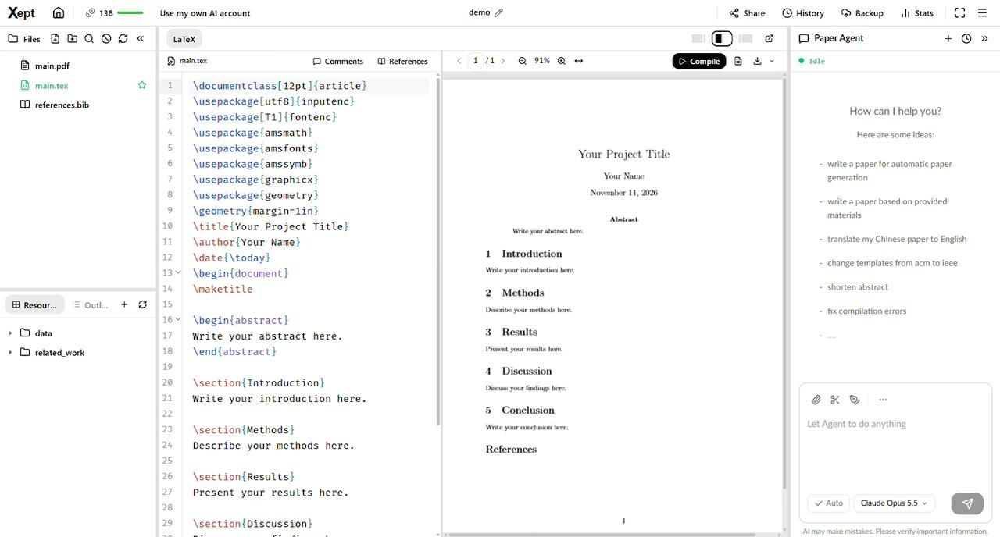
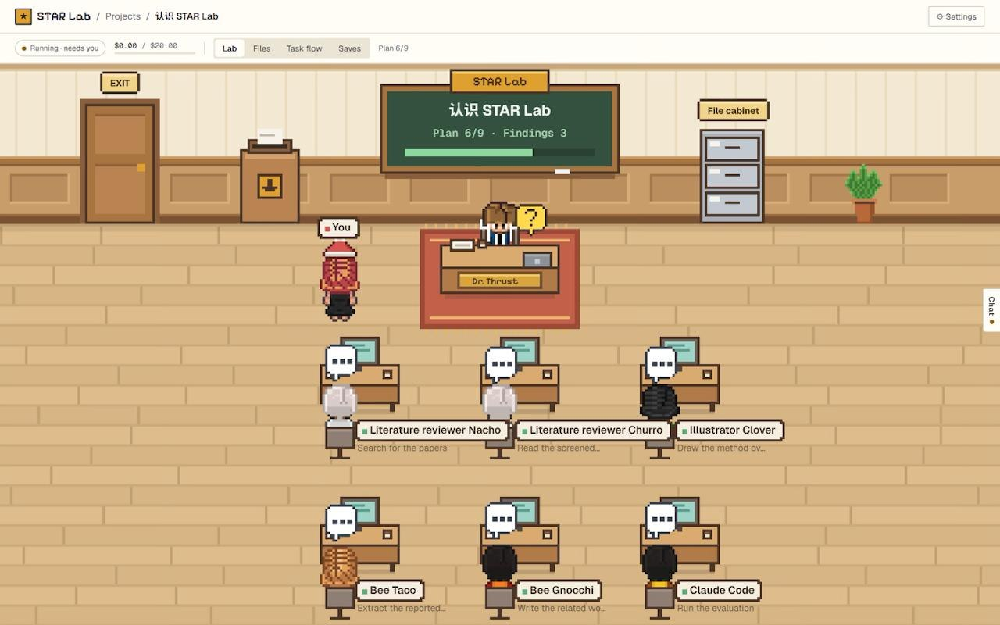

Xept
An AI agent that helps researchers write papers, on web and desktop. Prototype to production, with about 50 tools for editing, LaTeX and citation checks. Built with two collaborators.
Building AI agents · Singapore
Hi, Kairan here! 🌱 I work at the intersection of LLM agents, software engineering, and security at NTU Singapore. I’m curious about how we can build agents that people can understand, work with, and trust. My PhD research focuses on smart contract security and LLM-based agents for automated security analysis, and I also build agent systems for research and writing. I enjoy turning ideas into working software and figuring out what happens when things don’t go as planned. Feel free to say hello if you’d like to exchange ideas or build something together.

An AI agent that helps researchers write papers, on web and desktop. Prototype to production, with about 50 tools for editing, LaTeX and citation checks. Built with two collaborators.

A team of agents that turns a research question into a checked research package, with 32 rules enforced in code. Built with two collaborators.